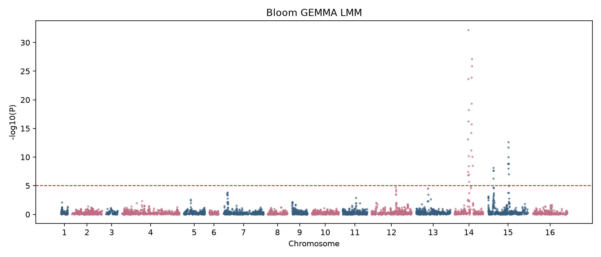
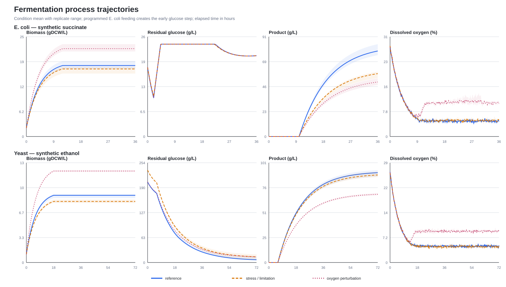
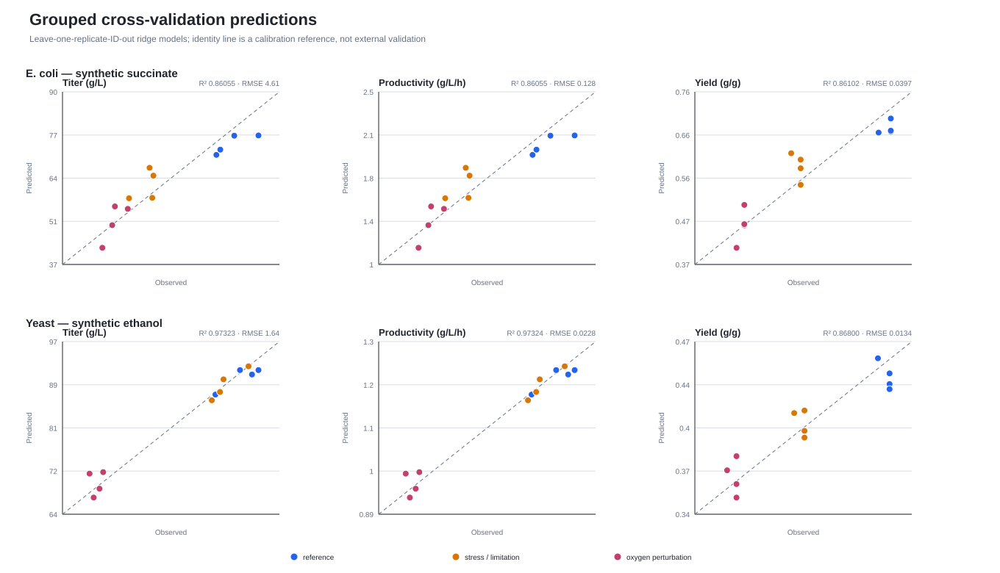

数据融合中枢 / 科学数据中心 / 工程细胞主题库 / 分析任务管理
原型内容：正式页面
分析任务管理
从工程细胞项目提出分析需求，统一管理数据审核、计算执行、结果复核和工程验证。
分析任务列表 原型内容
MO-20260806-001 为真实复现结果；其余为业务流演示任务。| 任务编号 / 名称 | 任务方式 | 工程细胞项目 | 分析目标 | 流程模板 | 状态 | 更新时间 | 操作 |
|---|---|---|---|---|---|---|---|
| MO-20260806-001真实结果 大肠杆菌 / 酵母多组学复现 | 严格复现 | EC-PROJ-20260806 | 多组学复现、关联分析、代谢模型与发酵预测 | 多组学复现 v1.0.0 | 已通过 | 2026-08-06 | |
| MO-20260807-002演示 赖氨酸高产菌株候选分析 | 标准组学分析 | EC-PROJ-20260806 | 定位候选改造位点并形成下一轮 DBTL 方案 | GPA 整合代谢网络 | 运行中 | 2026-08-07 | |
| MO-20260807-003演示 酵母发酵过程预测 | 标准组学分析 | EC-PROJ-20260806 | 产量、得率与工艺条件预测 | 发酵过程优化 | 待数据审核 | 2026-08-07 | |
| MO-20260807-004演示 新建多组学分析任务 | 申请建立复现模板 | 未选择 | 未填写 | 未选择 | 草稿 | — |
原型说明
列表页的设计目的
用户先看到任务集合与状态，再进入单条任务详情。任务状态来自平台任务服务与分析服务器事件；本页只有第一条任务使用真实复现结果，其余条目用于展示无复现包、待审核、运行中等完整业务情形。
2大肠杆菌 · 酵母
样本映射均为 condition_matched
4DNA · RNA · 蛋白 · 代谢
12 个原始文件已进入复现清单
PASS输入、输出与模块校验完成
其中 DIABLO 按无目标条件跳过
12运行模块与交付检查
结果文件与模块状态可单独查看
复现过程与节点状态
点击任一节点查看输入、工具、指标和输出阶段 01
数据入库与预检
已完成核验原始测序、质谱、参考基因组和分析依赖；建立可追溯的样本、文件、版本关系。
阶段 02
单组学预处理
已完成将原始文件转化为可用于关联和整合分析的标准化特征：变异、表达、代谢峰和蛋白定量。
阶段 03
关联与多组学整合
已完成从基因型—表型关联出发，连接表达、蛋白、代谢特征，形成可被工程细胞项目复用的证据。
阶段 04
工程细胞模型与应用
已完成将关联结果和组学特征用于基因组尺度代谢模型、产量预测和发酵过程优化。
GWAS / QTL：关联证据

真实输出：M1A Bloom QTL 的线性混合模型 Manhattan 图。横轴为基因组位置，纵轴为关联显著性；每个峰表示值得进一步核验的候选关联区域。
基因型代谢网络模型质量
MEMOTE 审核结果| 模型 | 总分 | 执行状态 |
|---|---|---|
| iML1515（大肠杆菌） | 0.906 | 已完成 |
| yeast_GEM_v9_1_0（酵母） | 0.695 | 已完成 |
模型审核用于揭示模型的结构与注释质量；报告中存在的质量发现会保留，不会被原流程静默修改。工程设计使用时，应结合实验约束和专业复核。
发酵过程轨迹
打开原图
真实输出：24 个合成示例批次的过程数据。可作为“发酵过程数据分析”功能的预览载体；不能作为真实生产工艺结论。
发酵产量预测
打开原图
真实输出：按重复批次分组留出的交叉验证。大肠杆菌 Titer 的 R² 为 0.861，酵母 Titer 的 R² 为 0.973；数据范围为合成演示数据。
从多组学结果到工程细胞决策的使用路径
| 工程细胞问题 | 平台调用的结果 | 用户得到的可用信息 |
|---|---|---|
| 某性状可能与哪些遗传区域有关？ | GWAS / QTL 关联结果、QQ 图和样本结构协变量 | 候选位点及关联可靠性提示；进入实验验证或文献核验。 |
| 该菌株的代谢路径在什么环节可能受限？ | GEM、pFBA、FVA、MEMOTE 质量报告 | 通量分配、可变通量区间和模型质量边界；辅助代谢路径设计。 |
| 怎样预估培养条件对产量的影响？ | 发酵轨迹、条件表现、分组交叉验证预测 | 可比较的条件—产量关系与预测不确定性；用于下一轮工艺实验设计。 |
| 如何形成可沉淀的工程细胞知识？ | 标准化特征字典、知识网络节点与边 | 将菌株、基因、表型、组学结果和证据文件串联检索。 |
分析任务总览
面向任务管理者展示整体状态、版本、样本范围、过程节点和校验结论。
查看扩展分析完成标记组学质量与结果文件
面向分析人员追溯原始输入、质控、比对、表达与组学特征文件，并可按格式预览或下载。
查看 DNA 比对统计模型与预测成果
面向工程设计人员查看代谢模型审计、通量分析、发酵预测与工艺建议的证据边界。
查看 MEMOTE 汇总原型中的真实数据资产页面所用完成状态、统计指标和图表均复制自
result_20260807；原始结果不被修改。此原型的链接均指向本目录中的副本，便于独立演示。新建任务到工程闭环
不是“脚本跑完”即结束：结果需先被校验与复核，再转化为工程设计或发酵验证任务，最后回写为可检索的项目知识与下一轮分析输入。
科研人员01 立项与目标定义选择工程细胞项目、底盘菌株、目标产物/表型与成功判定阈值。
数据管理员02 数据入库与审核登记来源、样本、实验条件、权限；自动预检后由责任人确认。
分析人员03 创建并运行流程套用分析模板，生成节点清单；分析服务器回传运行、失败、跳过和完成事件。
系统 + 专家04 校验与结果复核自动核验完成标记和输出文件；关键结论由生信/领域专家审核。
工程设计人员05 设计与实验验证将候选位点、代谢模型或工艺预测转成改造/发酵实验方案，并记录验证结果。
平台沉淀06 知识回写与迭代合格结果进入项目知识网络；验证反馈成为下一轮 DBTL 分析任务的新增数据。
需求规格说明书覆盖矩阵
| 需规功能 | 原型页面能力 | 真实复现过程对应内容 | 覆盖状态 |
|---|---|---|---|
| 工程细胞数据入库：多组学数据采集 | 任务信息、数据源、样本与文件可追溯 | DNA、RNA、蛋白、代谢原始数据及预检 | 已体现 |
| 工程细胞数据质量控制：组学数据质控 | 节点状态、质控工具、关键指标与完成标记 | FastQC、fastp、MultiQC；DNA 比对率 99.99% | 已体现 |
| 组学数据分析：基因型代谢网络模型构建 | 模型卡片、质量分数、通量分析结果入口 | GEM / MEMOTE / pFBA / FVA | 已体现 |
| 组学数据分析：GPA 数据整合基因组代谢网络模型 | 关联—整合—模型—预测的连续时间线 | GWAS/QTL、eQTL、pQTL、WGCNA、MOFA2、GEM | 已体现 |
| 发酵过程数据分析：基于模型的过程优化 | 过程轨迹、条件表现、分组交叉验证预测 | Fermentation extension v2 | 已体现 |
| 全流程数据分析：标准化知识网络图谱 | 知识网络接口节点与实体关系数量概览 | 43,581 节点、43,601 边 | 已体现 |
| 工程细胞服务：细胞分析与检测信息 | 组学结果在工程细胞项目内统一查看 | DNA / RNA / 蛋白 / 代谢结果与模型结果 | 已体现 |